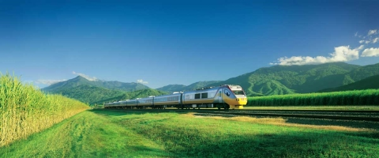
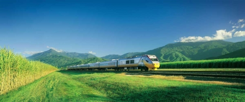

Great Dividing Rail
 

Taking You To The Greatest Destinations
Great Dividing Rail is Australia's oldest rail service that has influenced australian culture and become part of australian folklore history. To discover the true australian spirit, it must be done with a journey through the magical landscape that has been carved out through the millenniums. All this can be enjoyed in the luxury of our world class train carriages, built specifically to experiance the scenery of the Australian landscape.
Ticket are available in a variety of packages to suit the needs of all travelers. We have two classes First Class and Standard classes to meet all demands and necessities.